입찰 참여 판단 지원
AI 시대 · 있었으면 했던 것 · 시장 · 지금의 방식 · 기존 서비스
개발자 1인당 하루 병합 코드량
Anthropic · 2024년 대비같은 개발 과제를 더 빨리 완료
GitHub Copilot 실험 · 개발자 95명AI가 쉬지 않고 코드 약 3만 줄 작성
OpenAI Codex 실험출처: Anthropic · Peng 외(2023) · OpenAI
지금 SOL RADAR 코드 전체
커밋 · 푸시마다 자동 검사를 통과해야 반영됩니다
COCOMO 공수 추정 · 약 350 인월
10월 16일 첫 커밋부터 11월 4일까지 · 커밋 1,100건 이상
공고를 찾아 주는 도구는 있지만, 우리 회사 기준으로 판단해 주는 도구는 없었습니다.
1년 사이 6.5조원 증가
출처: 국가AI전략위원회(2026. 3) · 기획예산처 2027년 예산안(2026. 10)
키워드 알림이 많아
사람이 다시 거른다
공고문과 첨부를 눈으로.
자격 하나만 놓쳐도
제안 준비가 헛수고
책임자의 경험과 감.
왜 들어갔는지 남지 않는다
정정공고를 다시 열어
바뀐 마감 · 예산을 찾는다
| 기능 | 인XX | 비XX | 모XX | 클XX | SOL RADAR |
|---|---|---|---|---|---|
| 공고 찾기 · 읽기 | |||||
| 공고 수집 · 조건 검색 | ✓ | ✓ | ✓ | ✓ | ✓ |
| AI 공고 요약 | — | — | — | ✓ | ✓ |
| 우리 회사 기준 참가자격 판정 | — | △ | — | ✓ | ✓ |
| 판단 근거 원문 인용 | — | — | — | ✓ | ✓ |
| 참여 판단 | |||||
| 보유 인력 반영 | — | — | — | △ | ✓ |
| 추천 · 보류 · 비추천 권고 | — | — | — | — | ✓ |
| 검토 결정 · 사유 기록 | — | — | — | △ | ✓ |
| 가격 | |||||
| 투찰 가격 분석 | ✓ | ✓ | ✓ | △ | ✓ |
필수 자격 · 점수 · 권고를 정합니다
공고를 읽고 설명을 돕습니다
최종 결정과 사유를 남깁니다
점수(SOL Score)는 우리 회사와 공고가 얼마나 맞는지를 나타냅니다.
전체 구성 · 분석 순서 · AI의 역할 · SOL Score · 운영 현황 · 확장
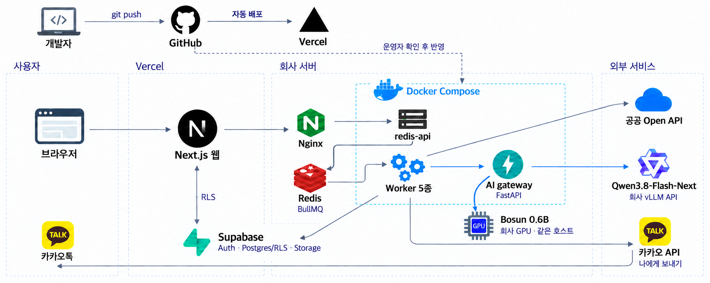
관리자 키와 AI 모델은 웹에 두지 않고, 무거운 작업은 회사 서버의 큐가 받습니다.
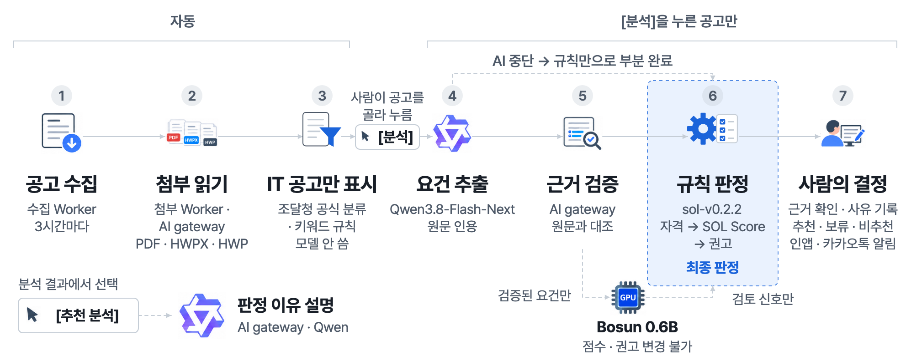
AI가 뽑은 근거는 공고 원문과 대조해 통과한 것만 씁니다.
| 구성 요소 | 하는 일 | 판정 |
|---|---|---|
| Qwen3.8-Flash-Next공고를 읽는 AI | 공고 요건과 원문 인용을 뽑고, 요청하면 판정 이유를 설명 | 바꾸지 못함 |
| Bosun 결정 모델회사 GPU의 작은 AI | 사람이 다시 볼 공고에 신호를 붙임 | 바꾸지 못함 |
| 규칙 엔진버전으로 관리하는 계산식 | 필수 자격 → SOL Score → 권고 | 최종 판정 |
AI가 멈춰도 규칙만으로 결과를 냅니다. 같은 입력이면 언제나 같은 결과입니다.
| 기준 | 배점 | 보는 것 |
|---|---|---|
| 기술 스택 적합 | 30 | 공고가 요구하는 기술을 우리가 가졌는가 |
| 유사 수행 실적 | 25 | 비슷한 사업을 해 봤는가 |
| 인력 가용성 | 20 | 마감 전에 투입할 사람이 있는가 |
| 규모 적합성 | 15 | 우리가 해 본 사업 규모에 맞는가 |
| 전략적 선호 | 10 | 회사가 키우려는 분야 · 발주기관인가 |
권고는 점수보다 필수 자격을 먼저 봅니다.
| 영역 | 운영 서버에서 하는 일 | 11월 3일 기준 |
|---|---|---|
| 공고 수집 | 나라장터 · LH · KEPCO · K-water · 기업마당 · 과기정통부, 3시간마다 | 출처 6곳 |
| 첨부 읽기 | 공고 첨부 PDF · 한글 파일에서 본문 추출 | 10,373건 |
| 분석 | 회사 AI 모델과 규칙으로 판정 | 실제 공고 364건 |
| 알림 | 추천 공고 카카오톡 알림 | 24통 발송 |
질의응답 때 운영 사이트 www.solideos-radar.com에서 직접 보여 드립니다.
다른 조직의 데이터는 DB가 직접 막습니다
관리 · 영업 · 분석 · 임원 · 열람. 최종 결정은 관리 · 영업만
공고 출처 · 첨부 읽기 · AI 모델을 설정으로 바꿉니다
계산 버전과 입력을 남겨 지난 분석을 그대로 다시 냅니다
서비스 운영자도 다른 조직의 데이터는 읽지 못합니다.
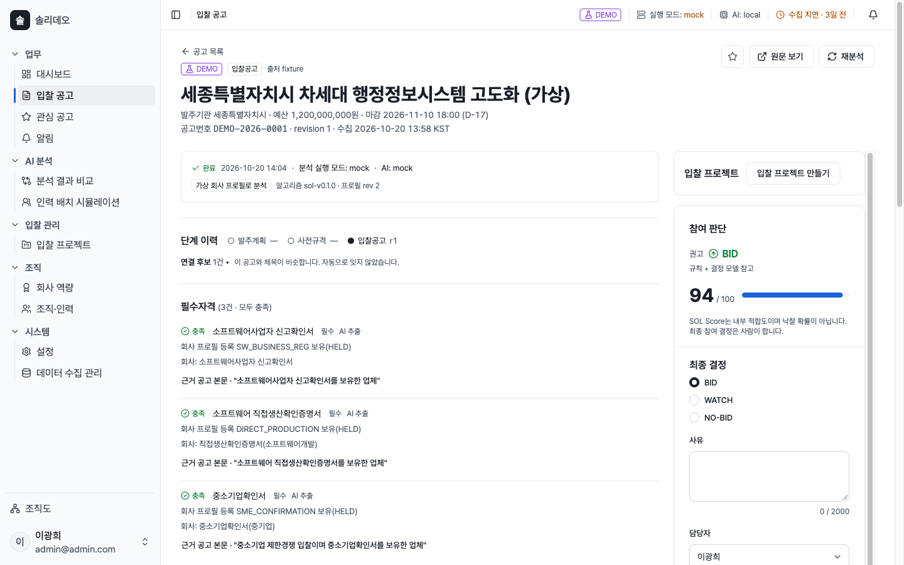
화면 캡처시연 공고 · 가상세종시 차세대 행정정보시스템 고도화
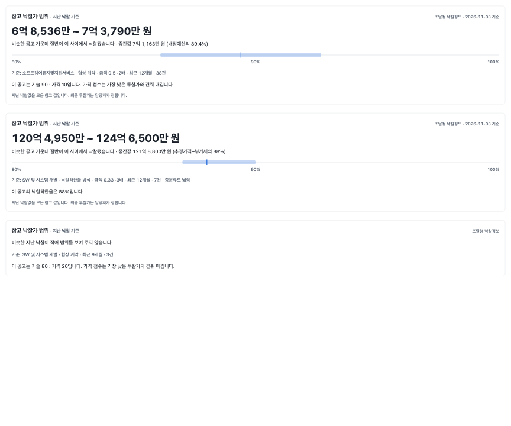
화면 캡처예시 화면시험 데이터
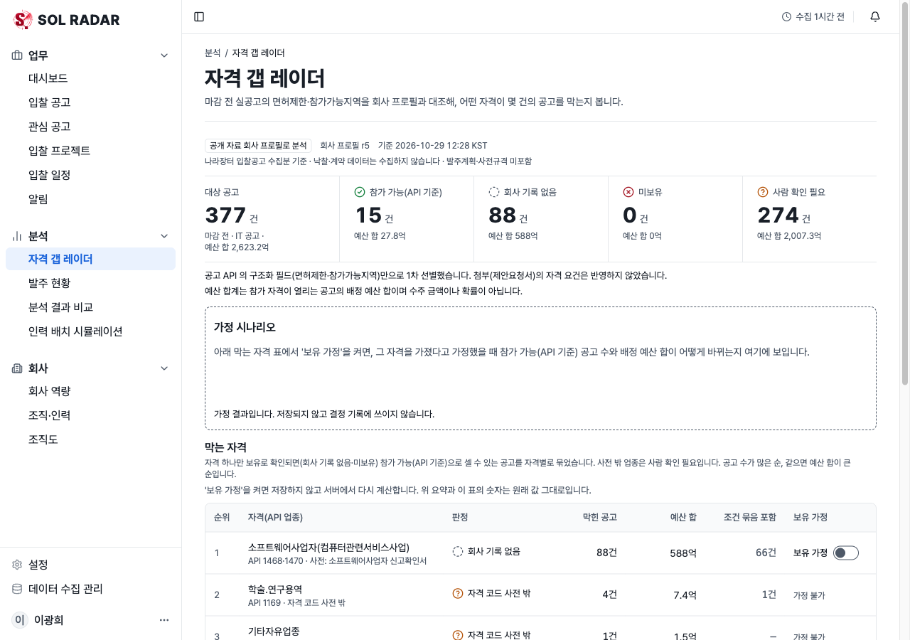
화면 캡처실제 공고나라장터 입찰공고
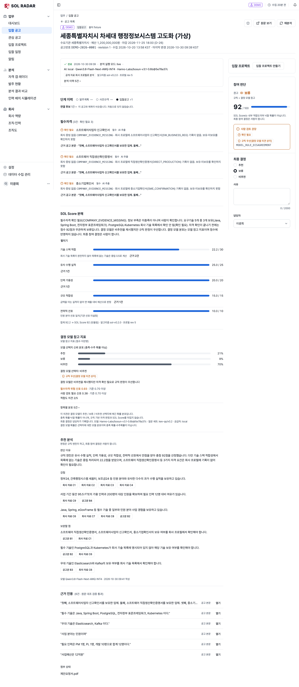
화면 캡처시연 공고 · 가상AI는 비추천 쪽, 규칙 권고는 92점 추천
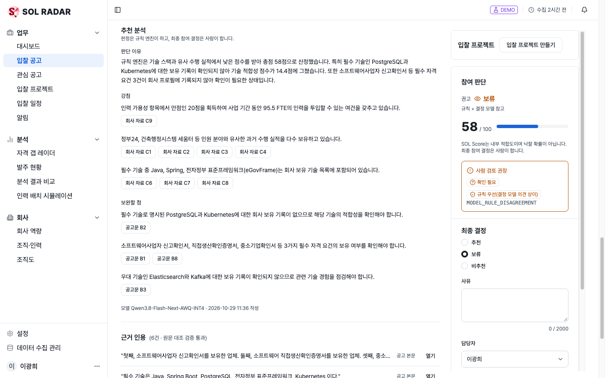
화면 캡처시연 공고 · 가상저장된 추천 분석
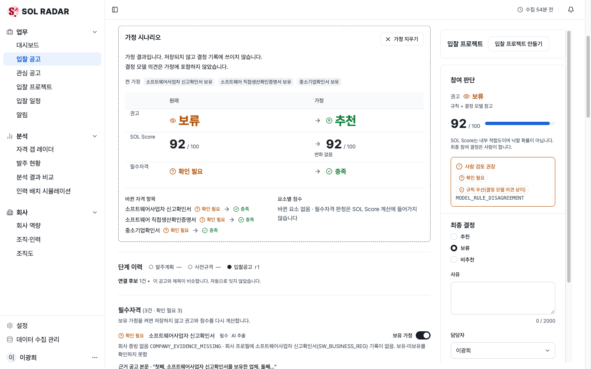
화면 캡처시연 공고 · 가상국방부 지휘통제체계 유지보수 · 방산업체 지정 가정 → 70점 보류
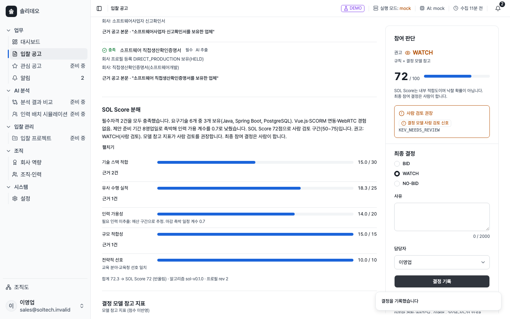
화면 캡처시연 공고 · 가상경기도교육청 통합 LMS · 재분석 뒤 비추천 결정
실제 공고11월 1일, 85점 추천 알림 수신
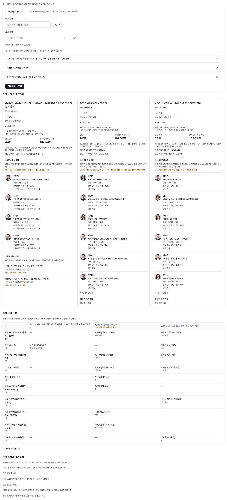
화면 캡처예시 화면가상 직원 200명 · 시험 데이터
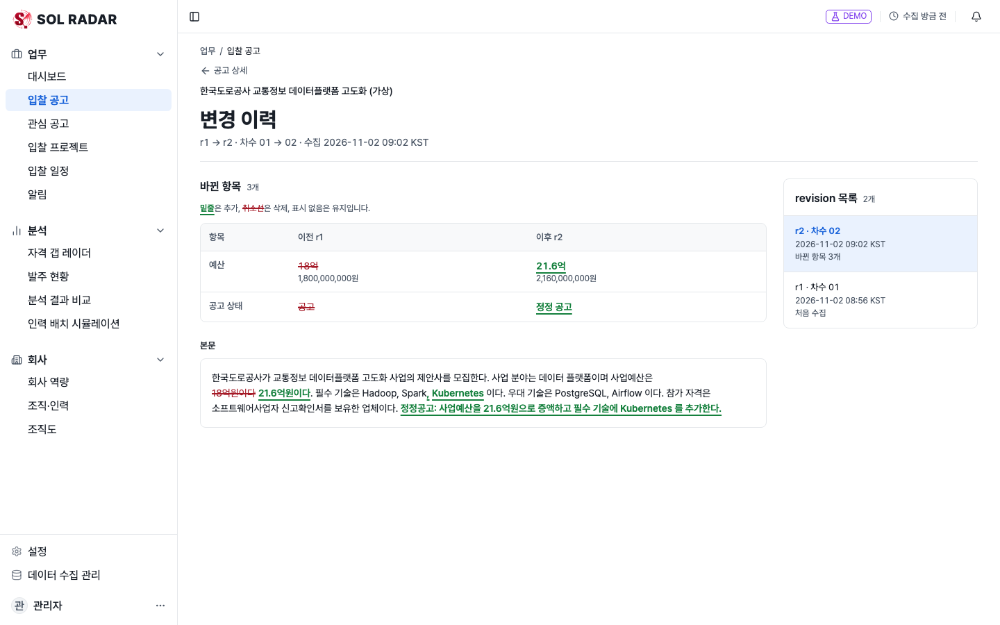
화면 캡처시험 환경 · 가상 공고예산 18억 → 21.6억, Kubernetes 요구 추가
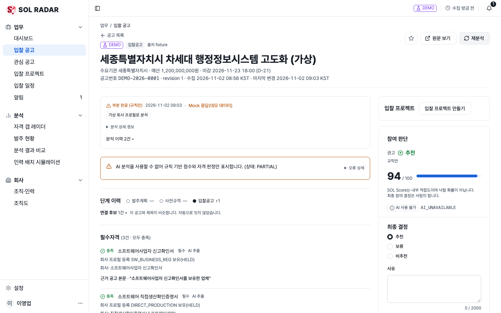
화면 캡처시험 환경 · 가상 공고AI 서버를 멈춘 뒤 다시 분석
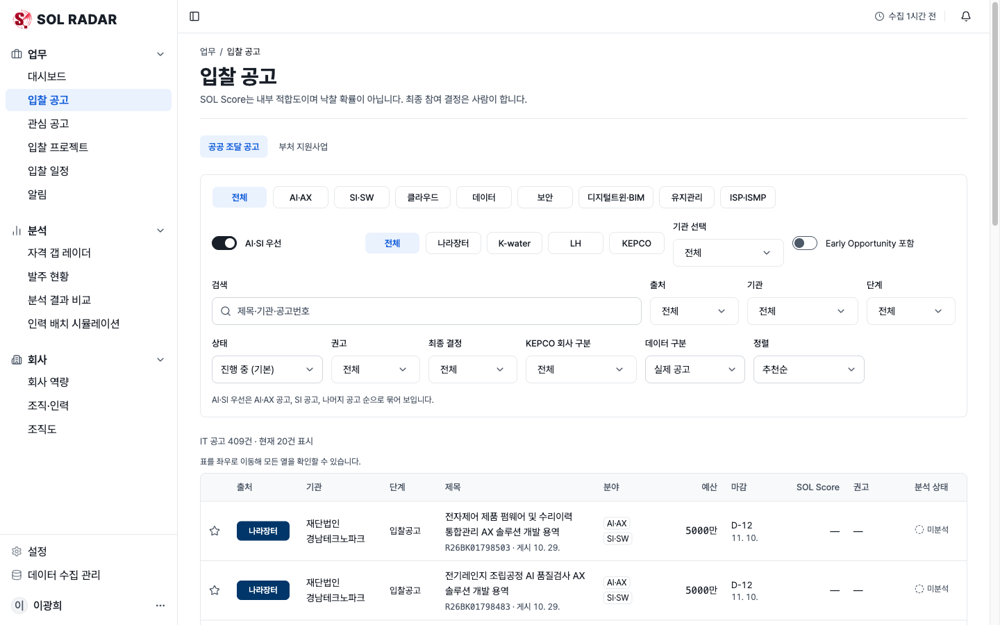
화면 캡처11월 3일 기준IT 분야 실제 공고
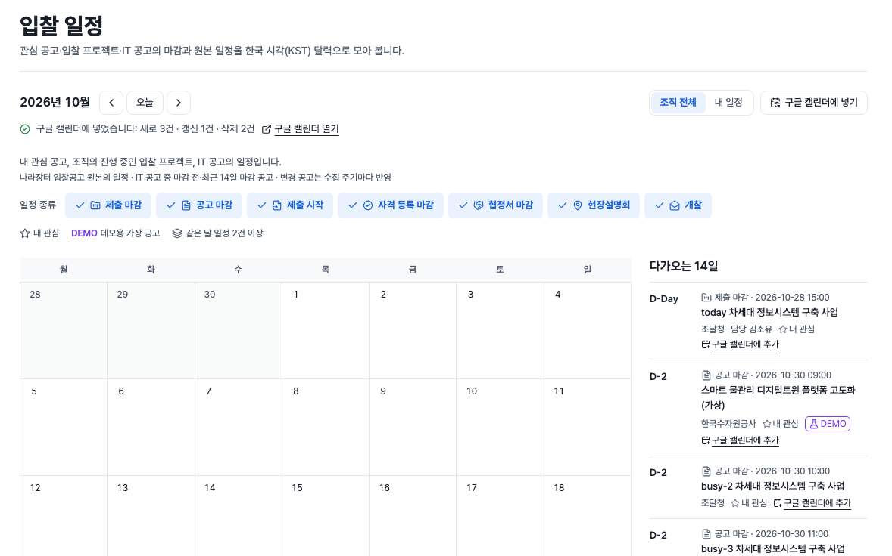
화면 캡처예시 화면시험 데이터
실적 4건 · 증빙 있음
충족실적 1건
미충족실적 기록 없음
확인 필요 정보 부족은 미충족이 아닙니다실제 공고 × 가상 회사 6유형
같은 사업은 학습 · 시험 중 한쪽에만
작은 결정 모델의 일부만 추가 학습 · 회사 GPU 1장
실제 공고 30개 사업
정답은 사람이 검수
지금 모델을
먼저 채점
학습한 모델을
같은 문제로 채점
확실히 나아졌을 때만
승인 뒤 교체
회사 수행 이력이 쌓이면 해마다 한 번 다시 학습합니다.
| 자동 시험 | 1,897건 통과 · 빌드 통과 |
| 브라우저 자동 점검 | 화면 흐름 158건 통과 |
| 운영 분석 | 실제 공고 364건 |
SOL RADAR는 들어갈 입찰을
근거와 함께 먼저 찾습니다.
결정은 사람이 합니다.
감사합니다